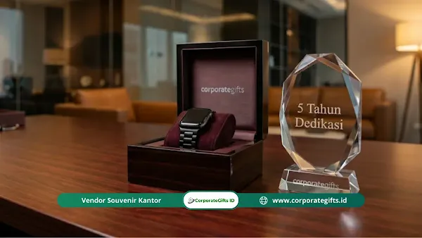

Corporate Gifts ID - Program Employee Milestone adalah sistem penghargaan terstruktur yang mengakui pencapaian masa kerja karyawan, mulai dari satu tahun pertama hingga dua dekade mengabdi, dan terbukti meningkatkan retensi karyawan, engagement, serta employer branding perusahaan di Indonesia. Panduan komprehensif ini merangkum framework 6 langkah membangun program, matriks gift berdasarkan tenure, kriteria memilih vendor, hingga cara menghitung ROI untuk presentasi ke jajaran direksi dan manajemen.
Setiap tahun, ribuan karyawan merayakan anniversary kerja mereka, namun sebagian besar melewatinya tanpa satu pun ucapan resmi dari perusahaan tempat mereka berkontribusi. Padahal, momen ini adalah titik paling strategis untuk memperkuat loyalitas, membangun rasa memiliki (sense of belonging), dan mengirimkan sinyal jelas bahwa kontribusi nyata mereka terlihat serta dihargai.
Poin Kunci Program Employee Milestone:
- Pengakuan Terstruktur: Bukan sekadar hadiah, melainkan sinyal psikologis jangka panjang yang memperkuat rasa keterikatan batin karyawan.
- Dampak Retensi Signifikan: Riset Gallup dan data internal membuktikan pengakuan bermakna mampu menekan tingkat turnover hingga 22%.
- Matriks Berjenjang: Pengalokasian reward disesuaikan dengan masa kerja (probation, 1 tahun, 3 tahun, 5 tahun, 10 tahun, hingga 20 tahun).
- Personalisasi Emosional: Hadiah berukir nama dan kartu ucapan bertanda tangan manajemen memberi impresi jauh lebih mendalam dibanding bonus tunai biasa.
- Kalkulasi ROI Terukur: Penghematan biaya rekrutmen karyawan baru membuktikan program ini menghasilkan return finansial yang nyata bagi organisasi.
Apa Itu Employee Milestone dan Bagaimana Cara Kerjanya-
Definisi Employee Milestone dalam Konteks HR Modern
Employee Milestone adalah titik pencapaian spesifik dalam perjalanan karier seorang karyawan yang diakui secara resmi oleh organisasi. Pencapaian ini umumnya dihitung berdasarkan akumulasi lama masa kerja (1, 3, 5, 10, hingga 20 tahun), pencapaian karier (promosi jabatan, kelulusan sertifikasi profesi), maupun peristiwa penting personal yang relevan dengan budaya korporat.
Dalam konteks Human Resources (HR) modern, titik tolak yang paling esensial dan konsisten dikelola adalah service milestone atau penghargaan masa bakti kerja. Bentuk apresiasi terstruktur ini mencakup pemberian hadiah korporat tematik, plakat sertifikat penghargaan, publikasi kehormatan internal di forum town hall, alokasi cuti tambahan, atau kombinasi terpadu di antaranya.
Bedanya Program Milestone dengan Reward dan Bonus Biasa
Banyak perusahaan beranggapan bahwa bonus tahunan atau penyesuaian gaji berkala sudah cukup mewakili apresiasi masa kerja. Namun secara psikologis dan operasional, keduanya memiliki perbedaan fundamental:
| Aspek Evaluasi | Bonus / Kenaikan Gaji | Program Employee Milestone |
|---|---|---|
| Sifat Penghargaan | Finansial dan transaksional | Emosional, personal, dan simbolis |
| Pemicu (Trigger) | Pencapaian target KPI kuantitatif | Waktu pengabdian dan loyalitas kerja |
| Dampak Psikologis | Cenderung jangka pendek (cepat terlupakan) | Memori mendalam jangka panjang |
| Nilai Memorabilia | Rendah (habis dipakai kebutuhan rutin) | Tinggi (benda fisik bernilai kenangan) |
| Mendorong Loyalitas | Secara tidak langsung | Membangun komitmen afektif secara langsung |
Milestone bukan sekadar bingkisan barang, melainkan penegasan martabat profesional karyawan bahwa kontribusi mereka selama bertahun-tahun diakui dan bernilai tinggi bagi eksistensi perusahaan.
Mengapa Program Milestone Karyawan Krusial untuk Bisnis di Indonesia-
Dampak Recognition terhadap Retensi dan Engagement
Data empiris dari berbagai studi global dan industri membuktikan urgensi sistem pengakuan formal:
- Gallup State of the Global Workplace: Karyawan yang merasa diapresiasi secara tulus memiliki kecenderungan 63% lebih kecil untuk aktif mencari lowongan kerja di tempat lain.
- LinkedIn Workplace Learning Report: Program rekognisi yang konsisten berkorelasi langsung dengan rasa percaya diri karyawan terhadap nilai kompetensi mereka di organisasi.
- Data Internal CorporateGifts.ID: Portofolio dari 200+ klien korporasi menunjukkan bahwa perusahaan yang menerapkan program milestone terpersonalisasi berhasil memangkas tingkat churn karyawan early-career (tahun 1 - 3) hingga 22%.
Mengacu pada tolok ukur Society for Human Resource Management (SHRM), biaya rekrutmen dan pelatihan karyawan baru setara dengan 6 hingga 9 bulan gaji karyawan terkait. Dengan menekan pergantian staf, program milestone menjadi instrumen efisiensi biaya HR yang sangat signifikan.
Budaya Kerja Indonesia dan Ekspektasi Lintas Generasi
Penerapan program di Indonesia memerlukan adaptasi terhadap karakteristik sosiologis tenaga kerja lokal:
- Kultur Kolektivisme Guyub: Seremoni penyerahan penghargaan di depan rekan sejawat memiliki daya bangga emosional yang jauh lebih tinggi ketimbang pengiriman privat semata.
- Penghargaan terhadap Masa Pengabdian: Loyalitas kerja masih dipandang sebagai wujud dedikasi terhormat dalam ekosistem korporasi nasional.
- Kebutuhan Preferensi Lintas Generasi:
- Gen X (1965 - 1980): Menghargai simbolisme prestisius, plakat framed resmi, dan jam tangan berukir nama.
- Milenial (1981 - 1996): Lebih menyukai hadiah yang menunjang gaya hidup, fleksibilitas voucher, dan perangkat fungsional.
- Gen Z (1997 - 2012): Menyukai desain modern estetis, kepedulian lingkungan (eco-friendly), serta rekognisi digital yang dapat dibagikan di media sosial profesional.
Framework Membangun Program Employee Milestone (6 Langkah Strategis)
Membangun program yang kokoh dan berkelanjutan dapat diselesaikan dalam rentang waktu 30 hingga 60 hari menggunakan metodologi 6 langkah berikut:
Langkah 1 - Tentukan Milestone Points yang Relevan
Fokuskan pengakuan pada titik rawan retensi dan pencapaian bermakna:
- Tier 1 (Tahun ke-1): Titik genting transisi awal karier dengan risiko turnover tertinggi.
- Tier 2 (Tahun ke-3): Fase stabilisasi di mana karyawan mulai menimbang prospek jangka panjang.
- Tier 3 (Tahun ke-5): Pengukuhan komitmen loyalitas sebagai kontributor inti organisasi.
- Tier 4 (Tahun ke-10 ke atas): Apresiasi duta korporasi atas dedikasi dan transfer pengetahuan institusi.
Langkah 2 - Segmentasi Karyawan dan Personalisasi
Hindari pemberian hadiah seragam tanpa diferensiasi. Rancang segmentasi berbasis divisi (staf kantor vs lapangan), lokasi geografis penugasan, serta preferensi fungsional. Sertakan ukiran nama presisi dan surat personal bertanda tangan direksi untuk menghadirkan kehangatan relasi.
Langkah 3 - Rancang Matriks Gift by Tenure dan Budget
Prinsip utama matriks adalah proporsionalitas nilai, kepatutan anggaran, serta kebermanfaatan produk bagi penerima (lihat detail matriks pada bagian berikutnya).
Langkah 4 - Pilih Vendor yang Tepat
Penyedia cinderamata korporat adalah mitra eksekusi program di lapangan. Keandalan vendor menentukan reputasi tata kelola HR di mata seluruh karyawan.
Langkah 5 - Bangun Mekanisme Distribusi dan Pengiriman
Rancang alur otomatisasi penyerahan: apakah diserahkan oleh pimpinan divisi saat rapat bulanan, atau dikirimkan langsung ke rumah karyawan jarak jauh (remote) dengan kemasan kardus protektif dan pelacak resi kurir terintegrasi.
Langkah 6 - Ukur, Evaluasi, dan Iterasi
Jalankan survei kepuasan singkat 30 hari setelah penyerahan hadiah, lakukan rekapitulasi anggaran secara berkala tiap kuartal, serta korelasikan data program dengan penurunan tingkat pergantian pegawai tahunan.

Paket hadiah dan souvenir employee milestone untuk retensi dan apresiasi loyalitas tim kerja.
Matriks Rekomendasi Gift Milestone by Tenure
Berikut panduan pilihan jenis hadiah berdasarkan masa kerja dan alokasi plafon anggaran perorangan:
| Masa Kerja (Tenure) | Budget Ekonomis (< Rp 300rb) | Budget Menengah (Rp 300rb - 1 Juta) | Budget Premium (> Rp 1 Juta) |
|---|---|---|---|
| Lolos Probation (3 Bulan) | Welcome kit branded (notebook, tumbler, pin) | Welcome set premium (tas kanvas, power bank, greeting card) | Executive onboarding box (TWS earphone, kartu voucher, plakat sambutan) |
| 1 Tahun Pengabdian | Sertifikat akrilik + voucher belanja Rp 150rb | Gift box bertema (aromaterapi, snack premium, custom mug nama) | Jam tangan bergaransi + sertifikat pigura + voucher fine dining berdua |
| 3 Tahun Pengabdian | Custom tote bag kanvas tebal + buku pengembangan diri | Gift set lifestyle (perawatan diri, voucher belanja, tumbler berinsulasi) | Voucher weekend staycation hotel + plakat logam eksklusif ukiran nama |
| 5 Tahun Pengabdian | Plakat kristal akrilik + voucher belanja Rp 300rb | Tas kerja kulit / dompet kulit asli grafir nama + surat apresiasi CEO | Smartwatch gadget terkini + trofi prestisius + jamuan makan malam divisi |
| 10 Tahun Pengabdian | Trofi kayu elegan + buku memorabilia perusahaan | Jam tangan eksekutif + sertifikat emas framed + tiket perjalanan | Paket liburan domestik + cincin/pin emas korporat + piagam penghargaan abadi |
| 15 s/d 20 Tahun Pengabdian | Plakat marmer ukir + voucher bernilai signifikan | Paket wisata keluarga domestik + album memorabilia dedikasi | Paket perjalanan internasional / umroh + lifetime recognition di aula perusahaan |
Kriteria Memilih Vendor Corporate Gift Milestone
Keberhasilan tata kelola program pengakuan karyawan bertumpu pada kualitas mitra pengadaan yang Anda tunjuk. Pastikan calon vendor memenuhi 6 kualifikasi utama berikut:
- Fleksibilitas Jumlah Minimum (MOQ): Mampu mengakomodasi pengadaan bertahap sesuai tanggal anniversary masing-masing staf tanpa membebankan biaya minimum pesanan yang membebani.
- Jaringan Logistik Nasional: Memiliki sistem pengiriman terpercaya ke berbagai kota di seluruh pelosok Indonesia dengan kemasan kardus khusus dan proteksi benturan.
- Fasilitas Personalisasi Akurat: Memiliki teknologi cetak UV, grafir laser logam, serta deboss kulit untuk membubuhkan nama dan nomor induk karyawan secara rapi.
- Portofolio dan Legalitas Korporasi: Berbadan hukum resmi dengan rekam jejak melayani instansi BUMN dan korporasi multinasional secara profesional.
- Ketepatan Lead Time dan Transparansi Biaya: Menyediakan rincian penawaran harga terbuka dan menjamin pemenuhan pesanan tepat waktu sesuai jadwal perayaan.
- Jaminan Kerahasiaan Data Karyawan: Menjaga privasi basis data nama, nomor kontak, serta alamat domisili karyawan selama proses operasional berlangsung.
Template Tracking dan Metrik Keberhasilan Program
KPI yang Relevan untuk Program Milestone
Untuk memastikan investasi berdampak nyata pada stabilitas organisasi, tetapkan metrik kinerja kunci (KPI) operasional berikut:
| Parameter KPI | Metodologi Pengukuran | Target Keberhasilan Awal |
|---|---|---|
| Participation Rate | Persentase karyawan terakui tepat pada bulan anniversary | ≥ 90% |
| Gift Satisfaction Score | Survei kepuasan singkat pasca penyerahan (skala 1 - 10) | ≥ 7,8 / 10 |
| Retention Rate Cohort | Persentase karyawan bertahan 12 bulan pasca perayaan milestone | Peningkatan 15% - 20% YoY |
| Program Awareness | Survei pemahaman staf terhadap skema benefit pengakuan | ≥ 85% dari total tim |
| Budget Variance | Selisih realisasi belanja hadiah dibanding plafon RKAP | ≤ 10% toleransi deviasi |
Cara Menghitung ROI Program untuk Manajemen
Formula Perhitungan Return on Investment (ROI)
Gunakan formula finansial berikut saat mempresentasikan usulan anggaran kepada Dewan Direksi:
Simulasi Riil Perhitungan:
- Perusahaan dengan skala 200 karyawan dan rata-rata gaji pokok Rp 8.000.000/bulan.
- Biaya penggantian 1 staf keluar diperkirakan setara 6 bulan upah = Rp 48.000.000.
- Sebelum program: turnover tahunan 20% (40 karyawan keluar = beban Rp 1,92 Miliar).
- Setelah program berjalan terstruktur: turnover turun menjadi 15% (30 orang keluar = beban Rp 1,44 Miliar).
- Penghematan biaya riil: Rp 480.000.000 per tahun.
- Total alokasi biaya pengadaan paket souvenir: Rp 150.000.000 per tahun.
- Hasil ROI Bersih: (Rp 480 Juta - Rp 150 Juta) / Rp 150 Juta x 100% = 220%.
Kesalahan Umum yang Harus Dihindari
Pelaksanaan program yang ceroboh justru berpotensi merusak moral kerja. Hindari 5 jebakan operasional berikut:
- Inkoneksitas Jadwal: Keterlambatan memberikan apresiasi beberapa bulan setelah tanggal masa kerja berlalu menimbulkan persepsi ketidakpedulian manajemen.
- Hadiah Generik Tanpa Sentuhan Personal: Produk polos tanpa identitas nama dan pesan motivasi terasa seperti formalitas pembagian barang logistik belaka.
- Mengabaikan Keterlibatan Atasan Langsung: Paket yang dikirimkan via kurir tanpa kata sambutan dari supervisor kehilangan separuh kekuatan emosionalnya.
- Sosialisasi yang Minim: Karyawan baru yang tidak mengetahui keberadaan skema apresiasi ini tidak akan terdorong motivasi loyalitasnya.
- Ketiadaan Evaluasi Kuantitatif: Tanpa pengukuran KPI berkala, tim HR akan kesulitan mempertahankan alokasi budget pada tahun anggaran berikutnya.
Otomasi Program Milestone via HRIS
Bagi perusahaan berskala menengah ke atas, kelola data secara otomatis melalui integrasi Human Resource Information System (HRIS). Konfigurasikan notifikasi otomatis 30 hingga 45 hari sebelum tanggal anniversary karyawan tiba, tautkan alur persetujuan ke atasan divisi, dan koordinasikan jadwal pemesanan bersama tim CorporateGifts.ID untuk pengiriman paket cinderamata tepat waktu.